记录群友的高频问点。如需补充，欢迎在下方留言。
点击登录页面弹窗问题
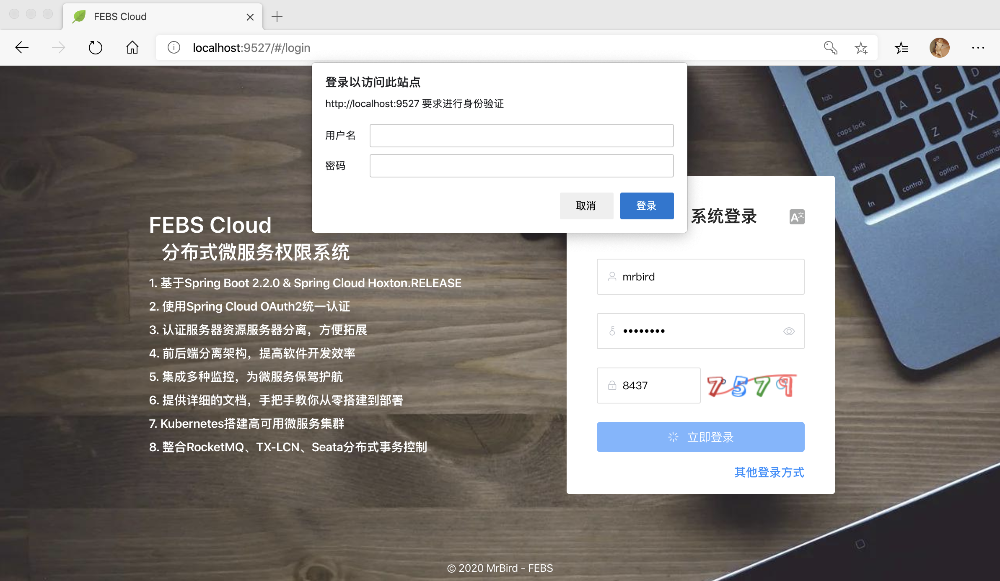
有两种情况会导致这个问题：
- 原因一：请求头携带的client信息不正确；
解决办法：修改febs-cloud-web工程src目录下setting.js文件的authorizationValue值：
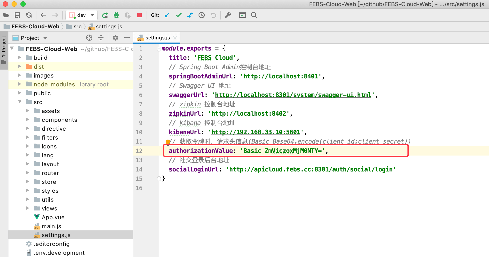
这个值怎么来的？查看数据库febs_cloud_base下的oauth_client_details表：
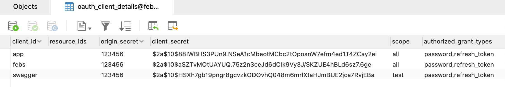
比如我们使用client_id为febs这个client，它的client_secert是经过BCRY加密的，原密码值可以同功能origin_secret查看，由上图可知，是123456，然后到http://tool.chinaz.com/Tools/Base64.aspx网站：
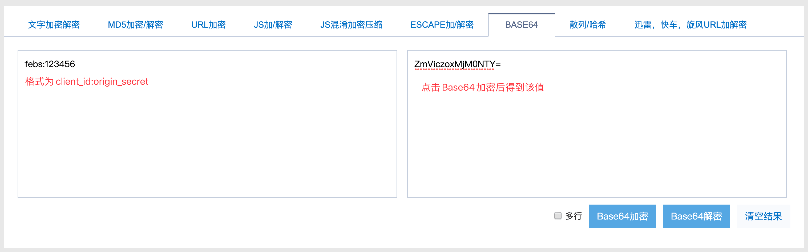
Base64加密得到的值ZmViczoxMjM0NTY=前面拼接上Basic空格就是最终authorizationValue值：Basic ZmViczoxMjM0NTY=。
- 原因二：数据库中没有oauth_client_details这张表。
解决办法：没有这张表的原因很简单，oauth_client_details表的additional_info字段长度为4096，5.7版本以下的MySQL不支持：
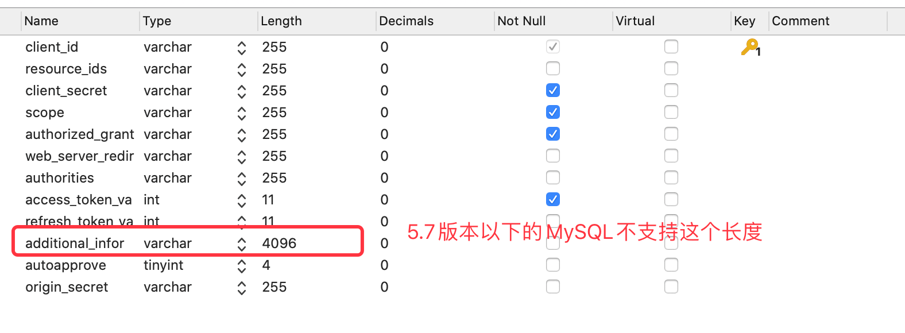
所以要解决这个问题，你可以手动在SQL中将oauth_client_details表的additional_info字段长度修改为500，然后重新导入；或者将您的MySQL升级到5.7以上的版本。
数据源不存在问题
比如在启动febs-auth项目的时候，控制台抛出请检查数据源之类的问题：
1 | org.springframework.context.ApplicationContextException: Unable to start web server; nested exception is org.springframework.boot.web.server.WebServerException: Unable to start embedded Tomcat |
原因可能有如下两种：
- 原因一：项目环境变量中没有配置nacos地址；
解决办法，在febs-auth（这里只是以febs-auth为例）项目的环境变量中配置nacos地址：
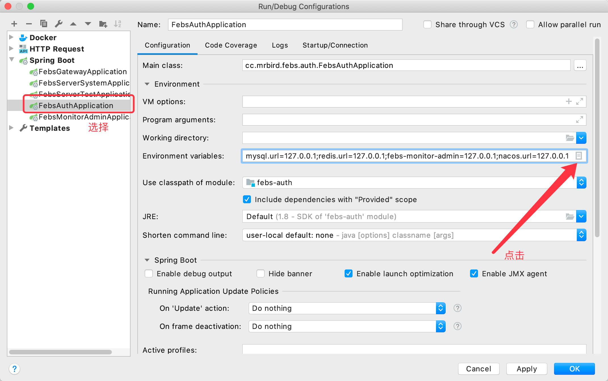 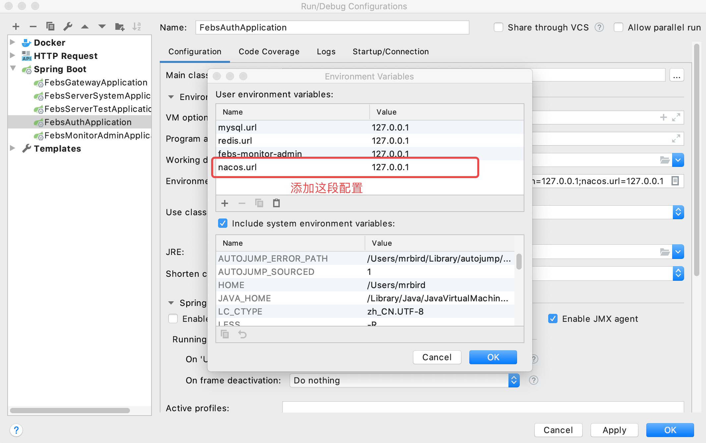
- 原因二：项目无法从nacos中找到对应的配置。
解决办法：这种情况比较少见，不过如果出现了，八成是因为你在项目配置文件中配置的后缀是yaml，而nacos控制台中配置的确是yml。
rabbitmq问题
在启动febs-server-system或者febs-server-test项目的时候，控制台抛出AMQP相关异常：
1 | org.springframework.amqp.AmqpIOException: java.io.IOException |
解决办法：请确保当前rabbitmq账号拥有权限。比如我们在配置文件中配置的rabbitmq的账号为：
1 | ... |
浏览器登录：http://localhost:15672/，默认账号密码都为为guest：
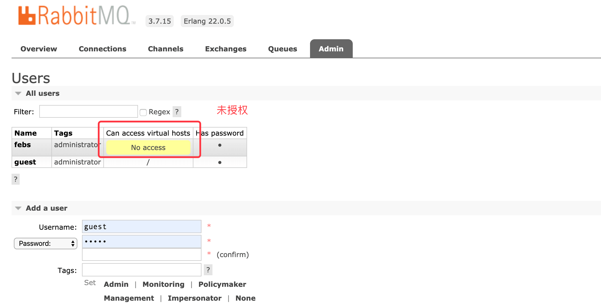
可以看到，febs账号没有设置权限，点击febs用户名，设置权限：
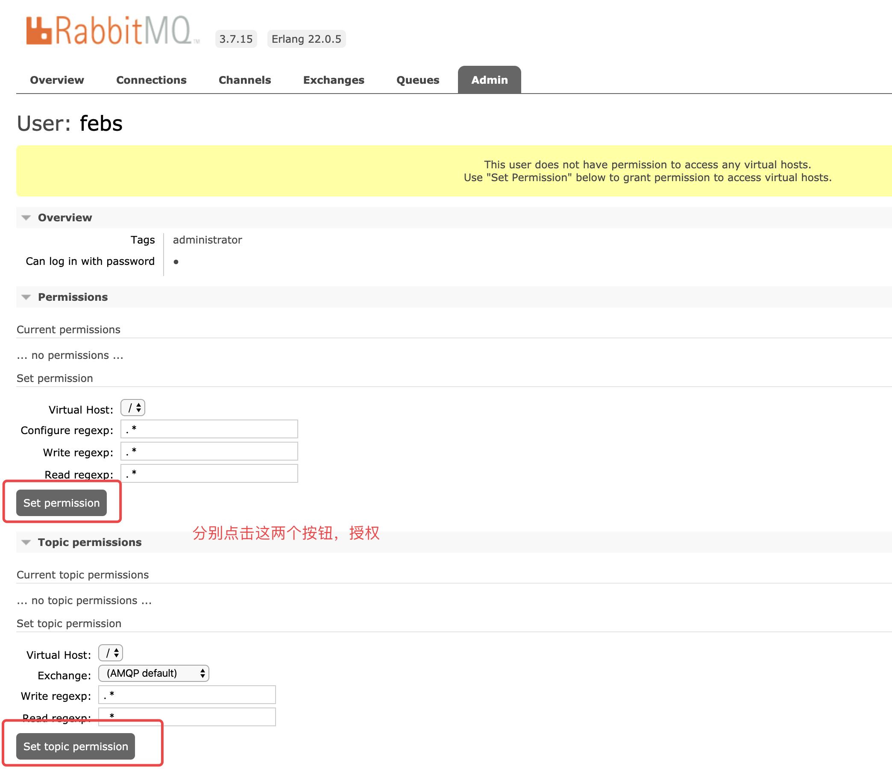
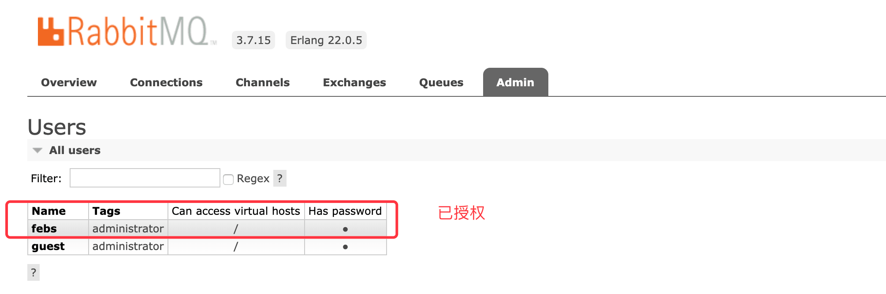
这时候再次启动febs-server-system或febs-server-test即可。
febs-monitor-admin中有服务红叉叉
此类问题都好解决，只需要点击对应报红叉叉的微服务就能看的详细的错误信息，比如：
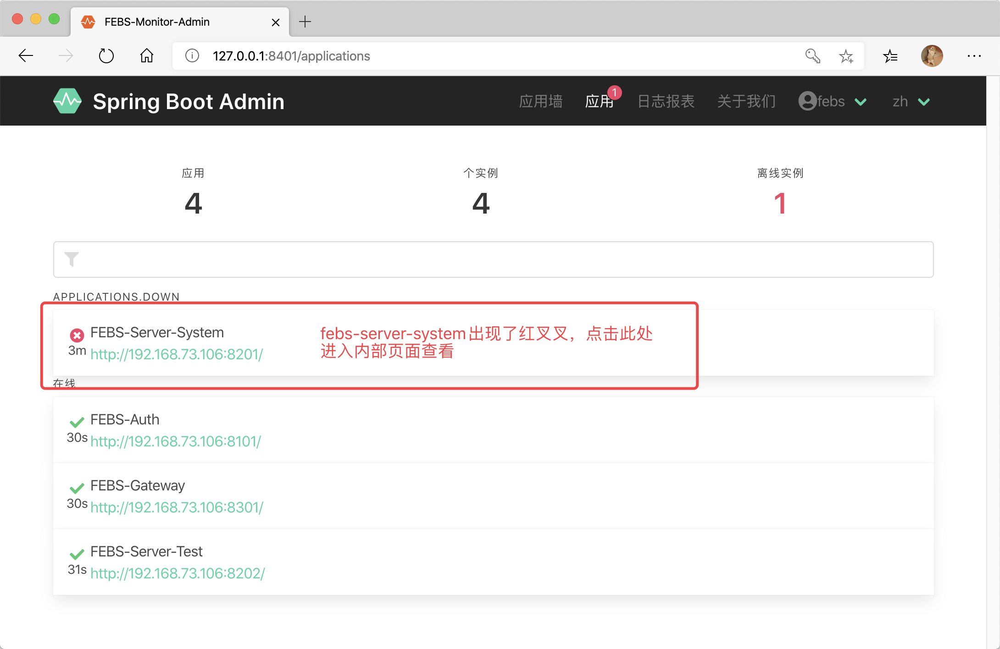 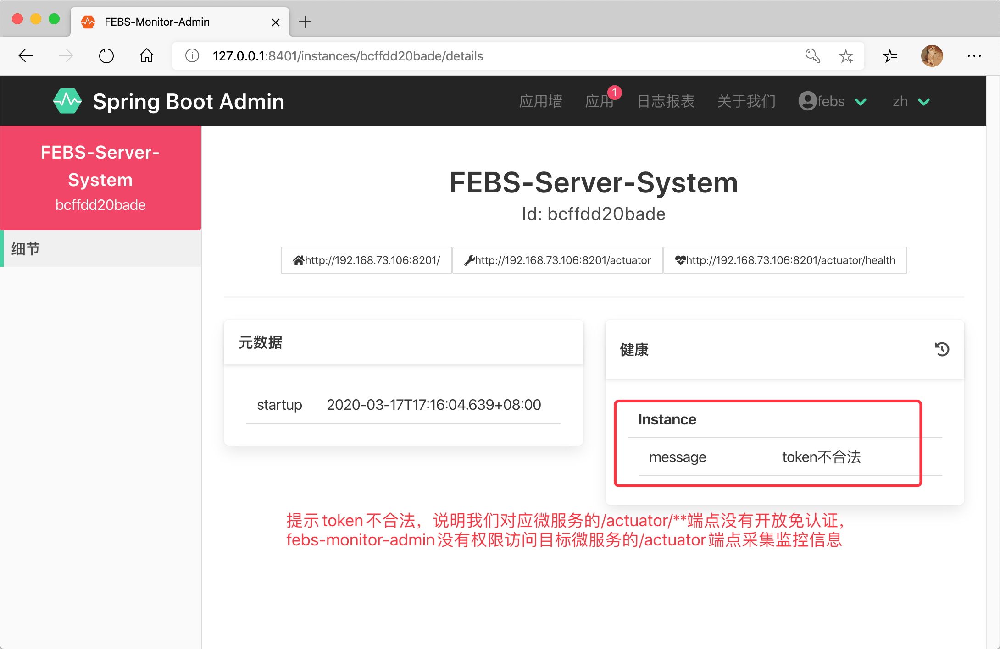
在febs-server-system项目的配置文件febs-server-system.properties：
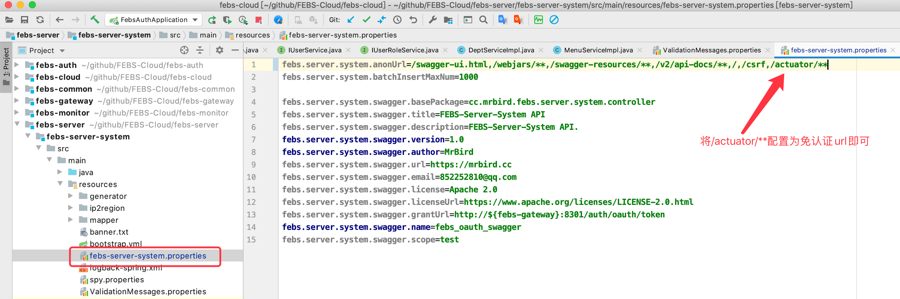
swagger认证页面出错
在swagger页面点击Authorize按钮的时候，页面出现错误：
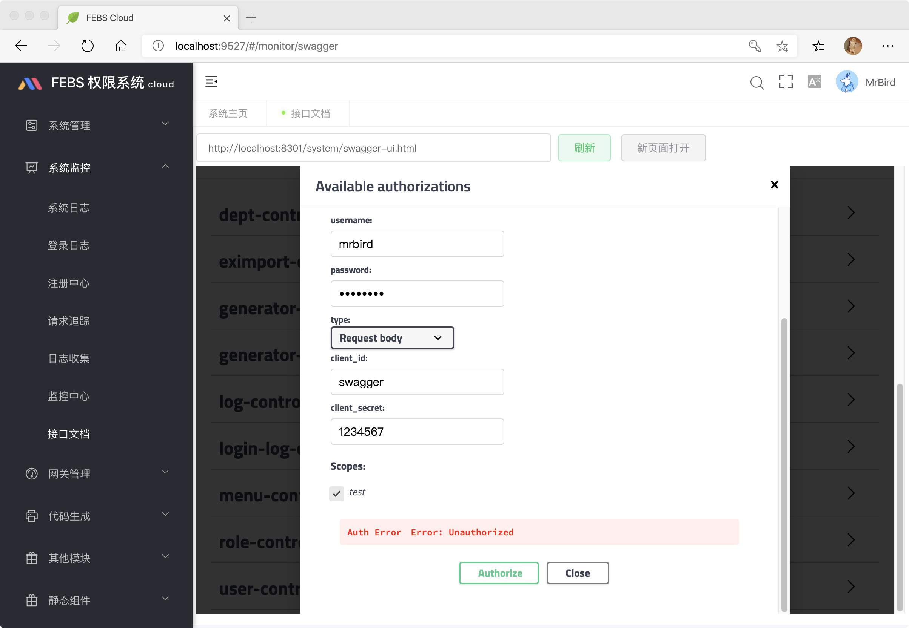
此类问题一般是你form表单填写的内容有误，请仔细核实。